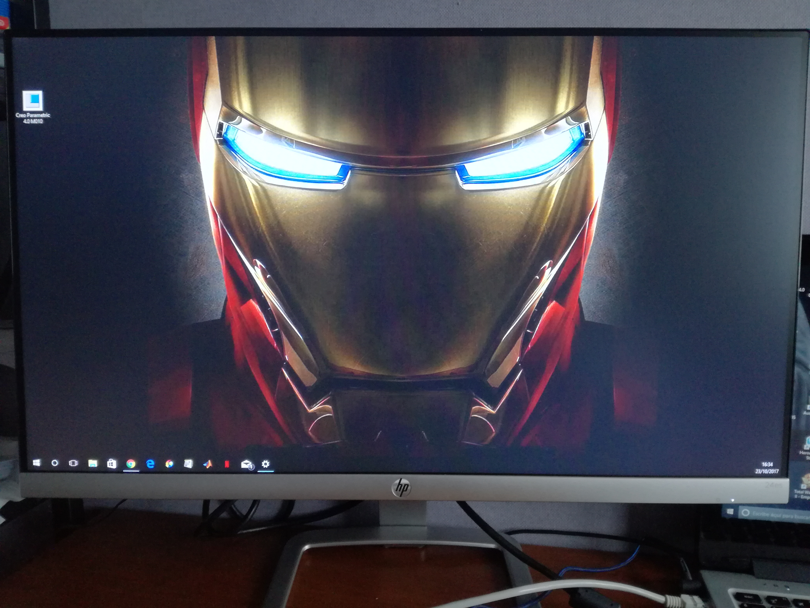

EL ORDENADOR
Este dispositivo tal y como lo conocemos hoy en día apareció en 1971, pero la primera computadora fue diseñada en 1938, ideada por el ingeniero alemán Konrad Zuse. Pero no sería hasta 1977 cuando aparecería el Apple II desarrollado por Steve Jobs y Steve Wozniak, convirtiéndose en el primer modelo de ordenador vendido a gran escala.
Bien es cierto que el ordenador como tal no sirve para comunicarse, necesita de un complemento llamado internet, pero juntando ambos se obtiene un medio de comunicación virtual y casi instantáneo. Primeramente con herramientas como el correo y más tarde con las redes sociales podemos estar en contacto con toda persona independientemente de donde se encuentre y sin que esto suponga un coste adicional.
No solo estamos en contacto con personas conocidas, podemos acceder a información de cualquier otra persona famosa o que haya publicado sus datos en alguna red social, podemos enterarnos de todo aquello que ocurre en la otra punta del mundo prácticamente al instante y compartir aquello que queremos reivindicar y hacerlo llegar a miles de personas sin movernos de casa.
A día de hoy sin duda alguna es de los dispositivos más populares junto al teléfono móvil por la infinidad de posibilidades que aporta, no solo en cuanto a la comunicación se refiere, sino que tiene múltiples usos, tales como el almacenamiento de datos e incluso como forma de entretenimiento.